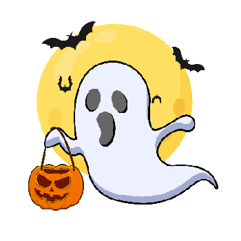

History of horror and why it's so beloved:
Horror fiction has always been less about monsters themselves than about the fears a culture wants to face. From its earliest Gothic roots in the 18th century to today's psychological and experimental stories, the genre has kept reinventing the same basic impulse: to turn anxiety into art.
The modern history of horror usually begins with Horace Walpole's The Castle of Otranto in 1764, a novel often treated as the first Gothic work and a major starting point for horror fiction. Soon after, writers such as Ann Radcliffe and Matthew Gregory Lewis pushed the genre further, blending haunted settings, threatened innocence, and transgressive desires into stories designed to unsettle readers. Mary Shelley's Frankenstein then added a new dimension: horror tied not just to castles and curses, but to science, ambition, and human responsibilily.
In the 19th century, horror became richer and more varied. Edgar Allan Poe helped define the short-form nightmare with tales that mixed dread, obsession, and psychological collapse, while later writers like Sheridan Le Fanu and Robert Louis Stevenson brought supernatural unease and split identity into the mainstream. Bram Stoker's Dracula gave the genre one of its most enduring icons, and the vampire quickly became a symbol that could absorb fears about sexuality, disease, invasion, and the unknown.
By the early 20th century, horror had expanded beyond the Gothic mansion into modern life. Authors such as H. P. Lovecraft moved the genre toward cosmic dread, suggesting that humanity was fragile in a universe far stranger and colder than it liked to imagine. At the same time, horror stories appeared in magazines, pulp fiction, and popular entertainment, making the genre more accessible and helping it develop a broader audience.
In her essay "Elements of Aversion", Elizabeth Barrette articulates the need by some for horror tales in a modern world:
"The old "fight or flight" reaction of our evolutionary heritage once played a major role in the life of every human. Our ancestors lived and died by it. Then someone invented the fascinating game of civilization, and things began to calm down. Development pushed wilderness back from settled lands. War, crime, and other forms of social violence came with civilization and humans started preying on each other, but by and large daily life calmed down. We began to feel restless, to feel something missing: the excitement of living on the edge, the tension between hunter and hunted. So we told each other stories through the long, dark nights. when the fires burned low, we did our best to scare the daylights out of each other. The rush of adrenaline feels good. Our hearts pound, our breath quickens, and we can imagine ourselves on the edge. Yet we also appreciate the insightful aspects of horror. Sometimes a story intends to shock and disgust, but the best horror intends to rattle our cages and shake us out of our complacency. It makes us think, forces us to confront ideas we might rather ignore, and challenges preconceptions of all kinds. Horror reminds us that the world is not always as safe as it seems, which exercises our mental muscles and reminds us to keep a little healthy caution close at hand."
In a sense similar to the reason a person seeks out the controlled thrill of a roller coaster, readers in the modern era seek out feelings of horror and terror to feel a sense of excitement. However, Barrette adds that horror fiction is one of the few mediums where readers seek out a form of art that forces themselves to confront ideas and images they "might rather ignore to challenge preconceptions of all kinds."
Source:
Wikipedia: Horror Fiction